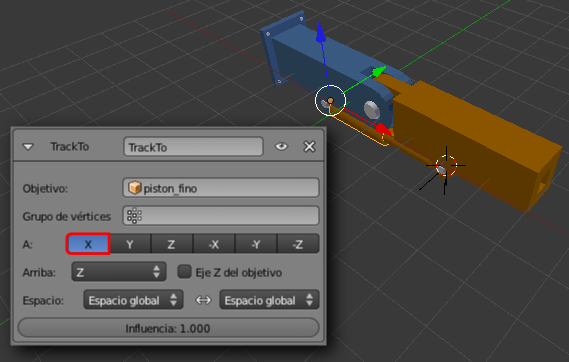
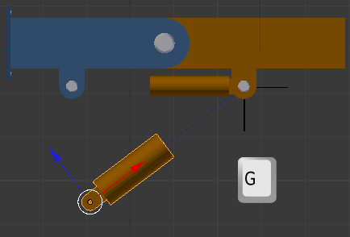
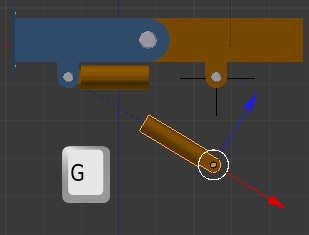
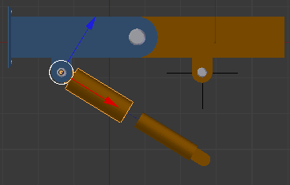
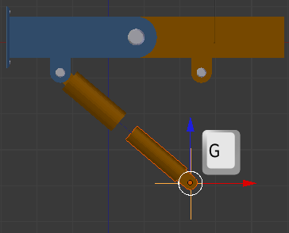
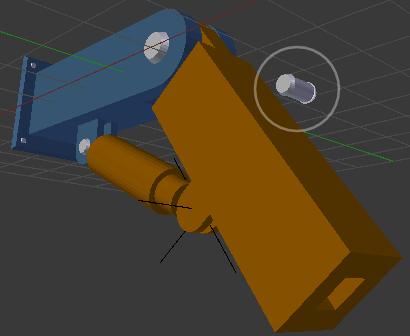
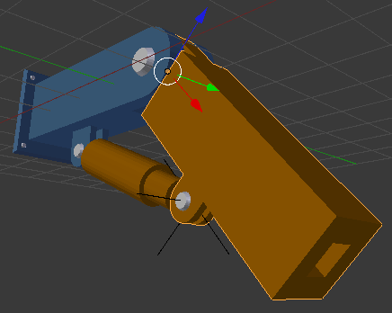
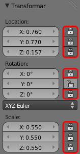

El pistón
A partir de ahora mostramos el brazo con unos pasadores colocados en las bisagras así como unos remaches para sostener brazo_inmovil a la supuesta pared.
Le llega el turno a los dos elementos del pistón. El uno debe mirar al otro y viceversa.
Seleccionamos piston_grueso y le aplicamos una Restricción  de tipo Seguir a y hacemos que su Objetivo sea piston_fino.
de tipo Seguir a y hacemos que su Objetivo sea piston_fino.
La restricción dice que sea el eje Y el que apunte al piston_fino pero está claro que nosotros lo que necesitamos es que sea el eje X el que apunte hacia él.
Esto se traduce en que al desplazar piston_grueso se verá obligado siempre a mirar a piston_fino (a su Origen en realidad).

Ahora seleccionamos piston_fino y le aplicamos otra Restricción  de tipo Seguir a con Objetivo piston_grueso. La única diferencia es que el eje debe ser -X (negativo).
de tipo Seguir a con Objetivo piston_grueso. La única diferencia es que el eje debe ser -X (negativo).
Si desplazamos cualquiera de ellos el compañero le mirará siempre...
Pero el pistón no responde de una forma conjunta, es decir, que las dos restricciones no se cumplen siempre y a la vez. Por ejemplo, en la anterior imagen, lo deseable es que piston_grueso se hubiera movido para mirar a piston_fino. Algo así.
¿Cómo lo conseguimos?
Hay que hacer un emparentamiento simple entre piston_fino (hijo) y el objeto vacío (padre). Seleccionamos primero piston_fino, luego el objeto vacío y hacemos Objeto/Padre/Establecer/Objeto. Al ser el objeto vacío el padre, esto es lo que ocurre cuando lo movemos ("G")...
Lo que viene ahora es obvio...: seleccionamos primero el objeto vacío y después brazo_movil para repetir la mismo operación de emparentamiento (Objeto/Padre/Establecer/Objeto). Esto se traduce en que cuando rotemos el brazo_movil ("R") todo el pistón funciona a las mil maravillas...
...a excepción de uno de los pasadores que se queda descolgado.
Ese pasador tiene que ser hijo de brazo_movil..., o de piston_delgado..., o incluso del objeto vacío. Aplicando la lógica lo mejor es que sea hijo de brazo_movil. Tras ese emparentamiento, todo queda perfecto.
Tal y como está nuestro brazo articulado ya está listo para ser animado pero en realidad faltarían cosas para refinarlo, como puede ser emparentar el resto de los pasadores y, sobre todo, que brazo_inmovil sea el padre final de toda la estructura para poder seleccionarla y llevarnos todo a otro sitio ("G").
Una edición extra que le da coherencia a la mecánica es seleccionar brazo_movil y en Propiedades ("N") dejar sólo la Rotación: Y sin bloquear.
Esto hace que no podamos ni moverlo ni escalarlo, tal y como ocurriría en la vida real.